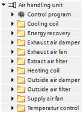
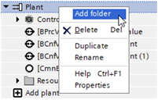
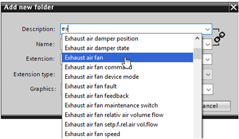
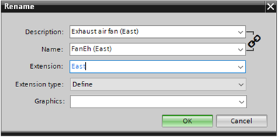
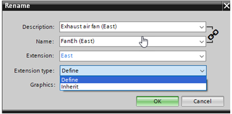
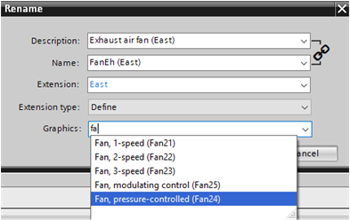
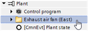
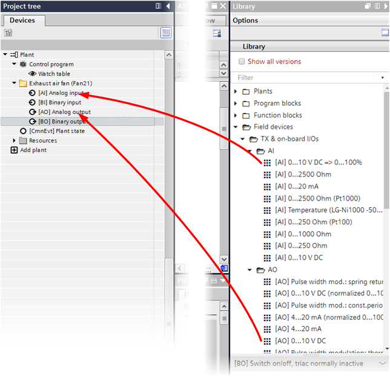

文件夹结构、名称和分配图形
您可以使用组件组和功能单元的文件夹来构建工厂。例如，您可以为送风机、排风机、能量回收、加热盘管、冷却盘管等创建组件文件夹，以及为温度控制创建功能文件夹。

创建文件夹的步骤如下：
- Right-click the desired plant and select Add folder to create a new folder.

- In the Description field, you can add a predefined text from the text data base for naming the folder. Suggestions are provided based on the entered characters.

- In the Extension field, you can enter an extension such as 1 / 2 or East / West. The extension type must be set to Define.

- The Extension type field determines whether you can define the extension or whether the extension is inherited from the next higher folder.

- In the Graphics field, you determine the graphics that are displayed in Desigo CC and Desigo Control Point. Suggestions are provided based on the entered characters.

- The folder is created on the corresponding plant.

Assign data points
数据点可以根据其应用程序分配到文件夹。
您可以在文件夹之间移动数据点，并将对象从库拖到工厂视图中。数据点按文件夹内对象类型的字母顺序排序。
